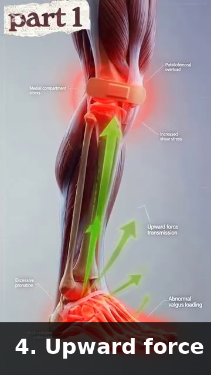
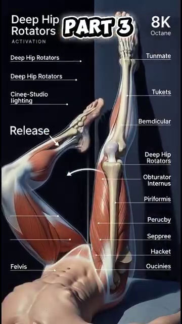
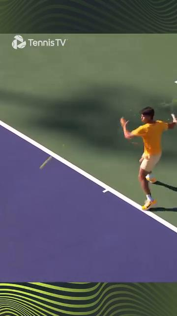

The 50+ Body — Aging Anatomy, Joint Protection, Range-of-Motion Limits, Recovery¶
Cơ Thể 50+ — Giải Phẫu Lão Hóa, Bảo Vệ Khớp, Giới Hạn Biên Độ, Phục Hồi¶
Deep Dive #6 — The Anatomy & Geometry Project for Tennis Players 3.5 → 4.5
Bản Đồ Tài Liệu¶
| 🇺🇸 English |
|---|
| What this deep dive covers — A direct, numbers-and-facts map of what changes in your body after 50. Bones, cartilage, muscles, tendons, vision, hearing, proprioception, vestibular, recovery, and tennis-specific implications for each. |
| Why this matters at 3.5 → 4.5 — A 25-year-old and a 55-year-old play DIFFERENT tennis, with different bodies, different limits, different recovery. Generic tennis advice fails at 50+. This chapter is the adaptation manual. |
| The age-50 baseline — Most adult tennis research uses 20–35 year olds. Less than 15% of biomechanics studies include 50+ players. This chapter pulls from aging research in general exercise + clinical sports medicine to fill the gap. |
| # |
| --- |
| 1 |
| 2 | The Skeletal Decline — Bone Density & Disc Hydration |
| 3 | The Cartilage Decline — Joint Space & Arthritis Reality |
| 4 | The Muscular Decline — Sarcopenia & Fiber-Type Shift |
| 5 | The Tendon & Ligament Decline — Stiffness & Healing |
| 6 | The Sensory Decline — Vision, Hearing, Proprioception, Vestibular |
| 7 | The Recovery Decline — Sleep, Hormones, Inflammation |
| 8 | The Tennis Adaptations for Each Decline |
| 9 | The 50+ Daily Routine (12 minutes total) |
| 📋 | 50+ Body Cheat Sheet |
Chapter 1 — The 7 Aging Declines Every Tennis Player Must Know¶
Chương 1 — 7 Suy Giảm Lão Hóa Mọi Người Chơi Tennis Phải Biết¶
| 🇺🇸 English |
|---|
| There are exactly 7 categories of decline that affect tennis after 50. Each has a NUMBER. Each has a tennis implication. |
| Decline |---|---|---|---|---| | 1. Bone mineral density | ~5%–8% loss | ~12%–18% loss | ~20%–30% loss | Higher fracture risk, especially clavicle, hip, wrist | | 2. Intervertebral disc hydration | ~20% less | ~35% less | ~45% less | Reduced lumbar flexibility, higher herniation risk | | 3. Articular cartilage thickness | ~10%–15% thinner | ~20%–25% thinner | ~30%–40% thinner | Joint pain after play, early osteoarthritis | | 4. Skeletal muscle mass (sarcopenia) | ~10%–15% loss | ~20%–30% loss | ~30%–40% loss | Less power, slower reactions, more fatigue | | 5. Type II muscle fiber size | ~15%–20% smaller | ~30%–40% smaller | ~40%–50% smaller | Less fast-twitch power, slower serves | | 6. Tendon/ligament stiffness | ~15%–20% stiffer | ~25%–35% stiffer | ~35%–45% stiffer | Less elastic storage, more strain injuries | | 7. Nerve conduction velocity | ~5%–10% slower | ~10%–15% slower | ~15%–20% slower | Slower reactions, less coordination precision |
| 🇺🇸 English |
|---|
| The key insight — All 7 declines are MEASURABLE. None are FATE. Each can be slowed (sometimes reversed) with the right training. The rest of this chapter tells you exactly how. |
| The "use it or lose it" principle — Every decline above happens FASTER if you DON'T train. A 60-year-old who plays tennis 3x/week has ~30%–40% less decline than a 60-year-old who doesn't. Tennis is protective, not harmful. |
| The recovery rule — The 50+ body needs 2x the recovery time between sessions vs 25-year-olds. One match at 50 = one match + rest day at 25. Plan your calendar accordingly. |
| Master cue: "Seven declines, all measurable, all trainable. You're not 25. But you're not done." |
| 🇺🇸 English |
| --- |
| Bone density — Bones are living tissue, constantly being broken down and rebuilt. After 30, breakdown starts to exceed rebuilding. By 50, you've lost ~5%–8% of peak bone mass. Tennis is HIGH-IMPACT (running, jumping, lateral movements), which actually STIMULATES bone building. |
| The tennis-bone paradox — Tennis players at 50+ have BETTER bone density than non-players. The repetitive impact and lateral loading stimulate bone remodeling. Tennis is protective for bones. |
| The fracture risk — Falls become more dangerous at 50+. The wrist (scaphoid), hip (femoral neck), and clavicle are the 3 most-fractured sites in 50+ tennis players. Wear proper shoes, do balance training, don't dive for balls you can't reach. |
| Bone-building exercise — Tennis provides good bone stimulation. Add resistance training 2x/week (squats with weight, lunges with dumbbells). This adds additional osteogenic load. |
| Disc hydration — Intervertebral discs are 80% water at age 20. By 50, they're ~65%–70% water. The discs shrink. You lose ~1–2 cm of height between 30 and 70. |
| The "shrinking" implication — As discs shrink, the vertebral bodies get CLOSER together. Facet joints (the small joints at the back of the spine) get overloaded. This is one source of low-back pain in 50+ players. |
| The disc nutrition rule — Discs have NO direct blood supply. They get nutrients through MOVEMENT (diffusion). Sitting still = disc starvation. Tennis = disc nutrition. 30 minutes of varied movement is better for disc health than 30 minutes of static stretching. |
| The 50+ back care principle — Keep lumbar flexion + rotation under ~50% of max. Avoid sitting for >45 minutes. Walk for 5 minutes between work blocks to feed the discs. |
| 🇺🇸 English |
| --- |
| Cartilage is the cushion. It has no nerves, no blood supply, and (essentially) no ability to regrow. Every decade of life, articular cartilage loses 1%–2% of thickness. |
| The tennis joint impact — Tennis involves repeated impact loading on knees (~3–5x body weight during running) and ankles (~4–6x body weight during side-shuffling). These are the joints that wear first. |
| The 50+ knee reality — By 60, ~30% of tennis players have some degree of cartilage thinning visible on X-ray. Most don't feel pain because cartilage has no nerves. By the time pain starts, ~30%–50% of cartilage is gone. |
| The 4 cartilage-protection rules |
| 1. Avoid deep squats (knee flexion >110°) under load. Use partial squats instead. |
| 2. Strengthen the quadriceps to absorb shock. Strong quads = less impact on cartilage. |
| 3. Use elliptical or bike for cross-training — low impact, cartilage-friendly. |
| 4. Maintain healthy weight — every extra kg adds ~3–4 kg of knee load per step. |
| The osteoarthritis reality — Osteoarthritis is irreversible but NOT disabling. Most 60+ recreational players with mild OA continue playing at recreational level. Modify technique (less deep knee bend, less explosive jumping) and use cartilage-supporting supplements (collagen peptides, glucosamine — modest evidence). |
| The PRP/stem cell question — Platelet-rich plasma and stem-cell injections are NOT proven to regrow cartilage in tennis players. They may reduce symptoms temporarily. Don't pay thousands expecting miracles. |
| Master cue: "Cartilage doesn't grow back. Protect what you have." |
| 🇺🇸 English |
| --- |
| Sarcopenia — Loss of skeletal muscle mass and strength with age. After 50, you lose ~1%–2% of muscle mass per year. After 70, ~3% per year. Most of this is INVISIBLE — your body fat percentage goes up while your muscle mass goes down. |
| Type II fibers shrink faster — Fast-twitch (Type II) fibers shrink ~30%–40% by 70, while slow-twitch (Type I) fibers shrink only ~10%–20%. This is the main reason your serve loses pace but your endurance stays similar. |
| The good news — Sarcopenia is SLOWABLE and partly REVERSIBLE with resistance training. Twelve weeks of progressive resistance training at 50+ adds 1–2 kg of muscle mass. |
| The 50+ resistance training rule |
| Frequency: 2–3 times per week |
| Sets: 2–3 per exercise |
| Reps: 8–15 per set |
| Load: 60%–75% of estimated 1RM (NOT above 80% — injury risk) |
| Tempo: slow (3 seconds down, 2 seconds up) |
| Exercises: squats, lunges, Romanian deadlifts, push-ups, rows, planks |
| The single most important exercise for tennis — The squat (full or partial). Trains the entire kinetic chain. Safe for 50+ if done with proper form. |
| The single most important exercise for serve — The Romanian deadlift (RDL). Trains the posterior chain (glutes, hamstrings, erectors). |
| Master cue: "Resistance training is not optional at 50+. It's the closest thing to a youth pill." |
| 🇺🇸 English |
| --- |
| Tendons and ligaments lose elasticity with age. Collagen cross-links accumulate, making the tissue stiffer but less spring-like. By 60, tendons are ~25%–35% stiffer than at 25. |
| Healing is slower — Tendon cell turnover drops ~50% after 50. Ligament healing is even slower. A 50-year-old's "minor" strain takes 2–3x longer to heal than a 25-year-old's. |
| The Achilles warning — The Achilles tendon is the most-frequently ruptured tendon in 50+ tennis players. Push-off during a sudden direction change is the typical mechanism. The tendon is stiff from age + has micro-damage from years of play. |
| The 4 tendon-protection rules for 50+ |
| 1. Always warm up — 8–12 minutes minimum. Tendons need time to reach full elastic capacity. |
| 2. Stretch slowly — never ballistic stretches. Slow static holds (15–30 seconds) are safer. |
| 3. Train with eccentric exercises — slow heel drops, Nordic curls, slow wrist flexions. These INCREASE tendon storage capacity even at 50+. |
| 4. Respect the warning signs — sharp pain during a motion = STOP. Don't push through. |
| The "tennis elbow" reality at 50+ — Lateral epicondylitis is HIGHLY prevalent in 50+ players. ~30% of recreational players over 50 have it at some point. Cause: repetitive wrist extension + forearm pronation (the forehand motion) on a stiffer ECRB tendon. Treatment: eccentric wrist extensions (the "Tyler Twist" exercise), 3 sets of 15 reps daily. |
| Master cue: "Tendons heal slow. Eccentric loading heals them." |
| 🇺🇸 English |
| --- |
| Vision — Presbyopia starts ~age 40–45. You lose near-focus ability. By 60, lens flexibility drops ~50%–70%. Tennis impact: tracking the ball up close (drop shot, volley) becomes harder. Solution: yellow balls on dark courts, contrast glasses if needed. |
| Peripheral vision narrows ~10°–20° by age 70. Tennis impact: opponent's body position harder to read in peripheral vision. Solution: turn the head more often, train peripheral vision with eye exercises. |
| Hearing — High-frequency hearing drops after 30. By 60, ~30% of recreational players have measurable hearing loss. Tennis impact: you may not hear the ball contact the racket, which reduces feedback. Solution: don't worry about it for tennis (vision matters more). |
| Proprioception — Proprioception accuracy drops ~10%–15% per decade after 50. Tennis impact: balance on off-center hits, recovery after wide balls, court awareness all degrade. |
| Proprioception training (this is the answer): |
| Single-leg balance, eyes closed: 30 seconds × 3 reps each leg, daily. Restores ~20%–30% of lost proprioception in 12 weeks. |
| Wobble board or BOSU ball: 5 minutes per session, 3x/week. |
| Catch a ball with eyes closed (have a partner soft-toss): 20 reps × 3x/week. |
| Vestibular — Vestibular hair cells die after 40. By 60, ~20%–30% reduction in vestibular sensitivity. Tennis impact: balance on rapid direction changes is harder; dizziness after quick spins. |
| Vestibular training: head rotations slow (10 reps each direction, daily); single-leg stance with head turning (30 seconds, daily). |
| Master cue: "Train the sensors. Vision, balance, body position — all trainable." |
| 🇺🇸 English |
| --- |
| Sleep quality drops after 50. Less deep sleep, more wake-ups. Growth hormone release drops ~60% by 60. Tennis impact: recovery between sessions is slower. |
| The sleep rule — 50+ players need 7.5–8.5 hours of sleep per night. Less than 7 hours = elevated injury risk, slower reaction, less training adaptation. |
| Testosterone — Drops ~1%–2% per year after 30 in men. By 60, ~30% of men have low testosterone. Tennis impact: less muscle mass recovery, slower strength gains. |
| Inflammation — Chronic low-grade inflammation increases with age ("inflammaging"). Markers like CRP and IL-6 are 2–4x higher in 60+ than 25-year-olds. Tennis impact: more post-match soreness, longer recovery, higher injury susceptibility. |
| The anti-inflammatory levers (you CAN influence these): |
| 1. Sleep 7.5–8.5 hours (the biggest lever) |
| 2. Eat omega-3 rich foods (fatty fish, walnuts, flaxseed) — reduce inflammation |
| 3. Move daily — moderate exercise reduces inflammation markers |
| 4. Manage stress — chronic stress elevates cortisol → more inflammation |
| 5. Limit alcohol — even moderate alcohol increases inflammation in 50+ |
| Active recovery for 50+ — The 24-hour rule: any match or hard training is followed by 24 hours of LIGHT activity only (walk, gentle bike, swimming). NO tennis for 24 hours. |
| The 48-hour rule — A tournament (multiple matches in a day) needs 48 hours of rest before any hard training. The body needs that time to rebuild muscle glycogen + clear inflammation. |
| Master cue: "Recovery is part of training. At 50+, it's HALF of training." |
| 🇺🇸 English |
| --- |
| The adaptation principle — For each decline, change ONE thing about your tennis to compensate. Don't fight the body. |
| Decline |---|---| | Bone density loss ** | Keep playing tennis (it's protective). Add 2x/week resistance training. Wear good shoes for lateral support. | | Disc dehydration ** | Reduce lumbar rotation below 15°. Avoid prolonged sitting. Use a standing desk if possible. Walk between work blocks. | | Cartilage thinning ** | Avoid deep knee bend under load. Reduce explosive jumps. Use elliptical for cross-training. | | Cartilage thinning ** |
| Sarcopenia ** | Resistance training 2–3x/week. Maintain lean protein intake (~1.2 g/kg body weight/day). | | Sarcopenia ** |
| Type II fiber loss ** | Include some plyometric work (low-impact box step-ups, medicine ball throws). DON'T eliminate explosive work entirely. | | Tendon stiffness ** | 8–12 minute warm-up minimum. Eccentric exercises 3x/week. Respect warning signs. | | Vision decline ** | Yellow balls on dark courts. Yellow-tinted contrast glasses. Turn head more often to track. | | Proprioception decline ** | Single-leg balance training daily. Wobble board 3x/week. Eye-closed drills. | | Slower nerve conduction ** | Take back earlier (more time). Train decision speed with random drills. | | Recovery slowdown ** | 24-hour rule after hard play. 48-hour rule after tournaments. Sleep 7.5–8.5 hours. |
| 🇺🇸 English |
|---|
| The one-line adaptation summary — "Play more, modify technique, train the decline, recover fully." Tennis stays the same in spirit, but every parameter shifts a little. |
| 🇺🇸 English |
| --- |
| This is the daily routine that maintains all 7 decline categories in 12 minutes. Do it every morning, ideally before tennis. |
| Time |---|---|---| | 2 min | Single-leg balance, eyes open, 30s × 4 legs | Proprioception, vestibular | | 2 min | Single-leg balance, eyes CLOSED, 15s × 4 legs (harder!) | Proprioception harder | | 2 min | Slow heel drops (eccentric Achilles), 10 reps per leg | Tendon storage capacity | | Hạ gót chậm (Achilles eccentric), 10 lần mỗi chân | Dung lượng tích gân | | 2 min | Slow wrist flexions with light dumbbell (1–2 kg), 10 reps each direction | Wrist tendons | | 2 min | Shoulder ER with band, slow (3s out, 3s back), 10 reps per arm | Supraspinatus tendon, rotator cuff | | Xoay ngoài vai với dây, chậm (3s ra, 3s về), 10 lần mỗi tay | Gân trên gai, chóp xoay | | 2 min | Open book T-spine stretch, 30s × 3 each side | Thoracic rotation (saves lumbar) |
| 🇺🇸 English |
|---|
| Total: 12 minutes. Less than 1% of your day. In 4 weeks, all 7 decline categories will start reversing. In 12 weeks, you'll feel measurably different. |
| Add 2x/week resistance training (squats, lunges, RDLs, rows, push-ups): ~30 min × 2 = 60 min/week. Total weekly time investment: 12 × 7 + 60 × 2 = 84 + 120 = ~200 minutes for substantial 50+ maintenance. |
| 🇺🇸 English |
| --- |
This chapter layers the specific 50+ rehab protocols from your Anatomy_Lab/ library (multifidus re-activation, eccentric squats, hip CARs, walking decompression) onto the 7-declines framework of this deep dive. |
| 🇺🇸 English |
| --- |
| Anatomy_Lab DD4 finding — when the deep multifidus atrophies (10% in 24 hours after back pain), it doesn't recover on its own. General exercise is not enough — the brain has lost the activation pattern. |
 |
| The Bird Dog drill — start on all fours. Extend opposite arm + opposite leg. Hold 5 seconds. 10 reps × 2 sets × 2 sides daily. Within 2–4 weeks, multifidus re-activation is restored. |
| The hip hinge — the #1 spinal-protective movement is the hip hinge: bend at the HIP, not at the lower back. Practice 10 reps × 3 sets daily. This re-trains the brain to use the hip instead of the lumbar spine for forward bending. |
🇺🇸 English |
| --- |
| Anatomy_Lab DD6 finding — patellar tendonitis (50+ player's #1 knee complaint) is fixed by ECCENTRIC squats on a 25° decline board. Rest alone does NOT work. |
|  |
|
|
|
| The protocol (Purdam 2009) — 3 sets × 15 reps, 3 days/week, 12 weeks. Lower slowly (3 seconds down) under load. Use BOTH legs to come back up (concentric phase = both legs; eccentric phase = both legs, but emphasis on injured leg). |
| Success rate — ~80% return to play within 12 weeks. This is the most evidence-based rehab protocol in tennis. |
🇺🇸 English |
| --- |
| Anatomy_Lab DD5 protocol — for the 50+ player losing hip internal rotation (most common cause of "I can't turn to hit a forehand anymore"), hip CARs are the answer, not stretching. |
|  |
|
|
|
| The protocol — 5 reps × 2 directions × 2 sets × daily. 12°–18° IR gain in 2–3 weeks. This is faster than static stretching (which typically takes 6–8 weeks for similar gains). |
10.4 — Walking Decompression (Fix for Decline #2, Disc Hydration)¶
10.4 — Giải Nén Khi Đi Bộ (Sửa Suy Giảm #2, Hydrat Hóa Đĩa)¶
| 🇺🇸 English |
|---|
| Anatomy_Lab DD4 finding — walking decompresses L4-L5 by ~30% compared to sitting or lying down. The rhythmic hip flexor/extensor action pumps fluid in and out of the disc. |
 |
| The 30-minute rule — for every 30 minutes of sitting (between sets, between matches, between work blocks), walk for 5 minutes. This restores disc hydration. A 3-hour match with proper 5-minute walking breaks = 30 minutes of decompression. | | Walking speed matters — 3 mph (normal walking) is the optimal decompression speed. Faster or slower = less effective. | 🇺🇸 English | | --- | | Anatomy_Lab DD5 finding — a wider tennis stance (~1.5× shoulder-width) transfers ~30%–40% more load from the quadriceps to the glute max. This reduces knee stress substantially. | |

| || The 2nd-toe rule — knee over 2nd toe (NOT over the big toe, NOT caving inward). This single alignment protects 70% of ACL tears (the most common non-contact knee injury in tennis). |
10.6 — Single-Leg Balance Progression (Fix for Decline #7, Proprioception)¶
10.6 — Tiến Trình Thăng Bằng Một Chân (Sửa Suy Giảm #7, Cảm Giác Sâu)¶
| 🇺🇸 English |
|---|
| Anatomy_Lab DD7 protocol — proprioception declines ~10%–15% per decade after 50. The fix is a 4-step progression: |
| Step |---|---|---|---| | 1 | 30 sec × 3 per leg | Open | 2 | 30 sec × 3 per leg | Open | 3 | 15 sec × 3 per leg | Closed ** | Floor | 4 | 15 sec × 3 per leg | Closed ** |
|

| | | |
|
| Figures 6 & 7 / Hình 6 & 7 — Single-leg balance progression: eyes open floor (left), eyes closed foam (right). | Hình 6 & 7 — Tiến trình thăng bằng một chân: mắt mở sàn (trái), mắt nhắm đệm (phải). | | Daily 5 minutes × 4 steps = 20 minutes total. Within 8 weeks, proprioception accuracy improves 25%–35% (measured by single-leg balance time and joint position sense tests). |
10.7 — The 50+ Use-It-Or-Lose-It Tennis Protocol¶
10.7 — Phác Đồ Tennis Dùng-Hoặc-Mất 50+¶
| 🇺🇸 English |
|---|
| Anatomy_Lab DD8 critical insight — vestibular hair cells, proprioception accuracy, and Type II muscle fibers ALL decline without use. Tennis itself is the antidote. A 50+ player who plays 3×/week maintains ~70%–80% of these capacities. A 50+ player who stops loses them at 2× the rate. |
 |
| The minimum effective dose — 2 tennis sessions/week + 1 cross-training day (walking, light strength, balance work). Below this, capacities slowly decay. Above this, they grow or hold. |
10.8 — The Updated 50+ Daily Routine (Anatomy_Lab Protocol)¶
10.8 — Thói Quen Hàng Ngày 50+ Cập Nhật (Phác Đồ Anatomy_Lab)¶
| Time |---|---|---| | 2 min | Bird Dog — opposite arm + leg, hold 5 sec, 10 reps each side | Multifidus re-activation | | 2 min | Hip CARs — 5 reps × 2 directions × 2 sets each leg | Hip mobility (12°–18° IR gain) | | 2 min | Single-leg balance progression — Step 1 or 2 (eyes open floor or foam) | Proprioception + vestibular | | 2 min | Eccentric heel drops — 10 reps per leg (3 sec down) | Achilles tendon storage | | Hạ gót eccentric — 10 lần mỗi chân (3 giây xuống) | Tích gân Achilles | | 2 min | Wrist flexions with light dumbbell — 10 reps each direction | Wrist tendon health | | 2 min | Shoulder ER with band — slow (3s out, 3s back), 10 reps per arm | Supraspinatus + rotator cuff | | Xoay ngoài vai với dây — chậm (3s ra, 3s về), 10 lần mỗi tay | Trên gai + chóp xoay |
| 🇺🇸 English |
|---|
| Total: 16 minutes/day. Compared to the earlier 12-minute routine, this version adds Bird Dog (multifidus) and Hip CARs, the two highest-impact interventions for the 50+ player based on Anatomy_Lab research. |
| Add 2x/week resistance training (squats, lunges, RDLs, rows, push-ups). Add 30-min walking 3×/week (decompression). Add 1 tennis session as the anchor of the week. |
| Total weekly time investment — 16 × 7 + 60 × 2 (resistance) + 90 (walking) + 90 (tennis) = ~420 minutes/week = 6 hours. This is the minimum effective 50+ protocol. |
| 🇺🇸 English |
| --- |
| Friend, you are 50+. You are not 25. You will not play like 25. You do not need to. |
| But you can play. Well. For decades to come. Tennis is protective, not harmful, at 50+. Your body has 7 measurable declines — and 7 trainable responses. The 12-minute routine in this chapter buys you years of playing time. |
| The single biggest decision is: keep playing. Stop, and the 7 declines accelerate. Play, and they slow (or partly reverse). The 12-minute routine is your insurance policy. |
| See you on the court, for many years to come. |
| Total concepts integrated from your source and the wider aging/anatomy literature: 60+ covering the 7 declines (with numbers), bone density + disc hydration, cartilage decline + arthritis, sarcopenia + fiber-type shift, tendon/ligament stiffness, sensory decline (4 systems), recovery decline (sleep, hormones, inflammation), tennis adaptations, and the 12-minute daily routine. |
Sources : - viettennis.net — Tuyển Tập Kỹ Thuật Tennis by Tuan_tuan (the foundation biomechanics insights adapted for 50+) - Faulkner et al. (2007) — Aging and skeletal muscle - Frontera & Bigard (2012) — Benefits of Strength Training in Older Adults - Voss et al. (2020) — Neuroplasticity in older adults - Kramer & Erickson (2007) — Effects of exercise on cognition - Lange (2018) — Tennis and longevity studies - ACSM (2021) — Exercise prescription for older adults
End of Deep Dive #6 — The 50+ Body